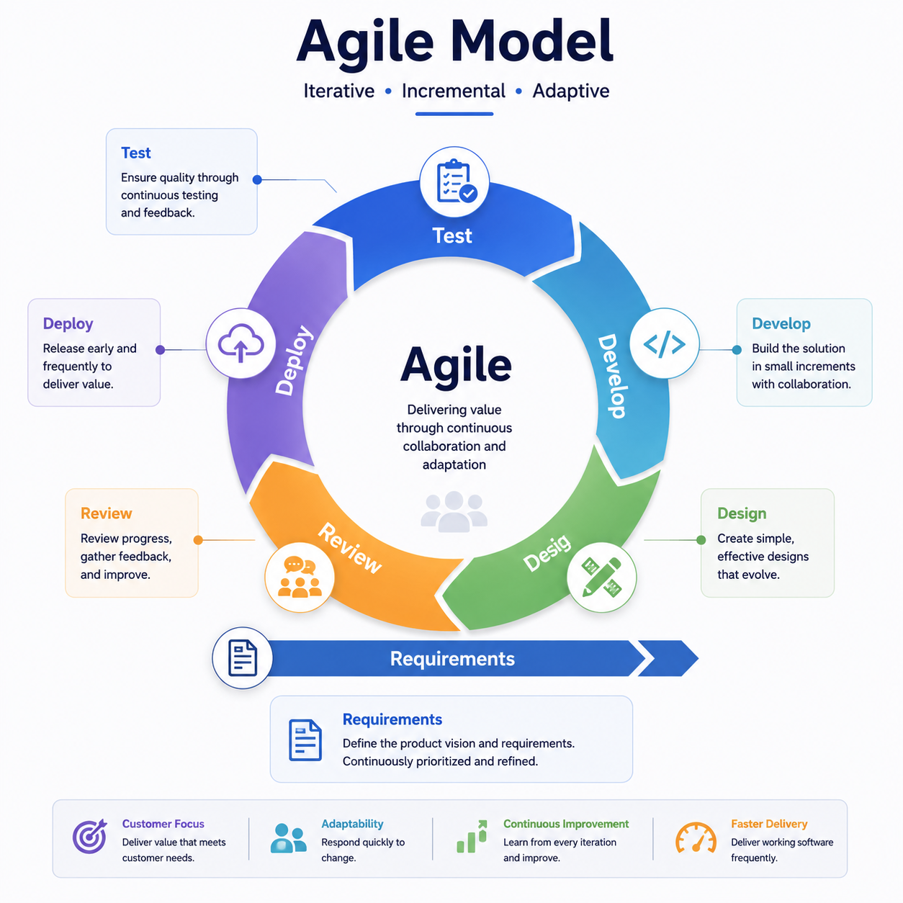

Agile Process Models
Agile turns short cycles into working increments, feedback and adaptation—not merely repeated activity.
Explain how short iterations deliver useful software, expose feedback and adapt subsequent work to changing needs.
Every cycle should create evidence and value

How to read it: plan a small amount, build and test it, review working results, learn from stakeholders, then adapt the next cycle.
Doing the same unfinished work again and again.
A bounded cycle that produces a tested result, learning and a better-informed next decision.
Student services portal
Deliver appointment booking first, test it, observe real use, review feedback with students and staff, then change reminders and waiting-list rules in the next short cycle.
Agile is not “working fast.” It is disciplined adaptation through frequent working software, collaboration and feedback.
The section below is added clarification.
Recognize Agile logic
Short iterations, working software, customer collaboration, repeated feedback and adaptation—even when requirements change late.
Agile does not mean no architecture, no documentation or no planning; it changes their timing and feedback cadence.